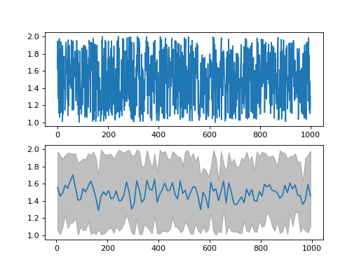

Usage¶
Start by importing UBCS LCP auxiliary package library.
import ubcs_auxiliary
-
ubcs_auxiliary.threading.new_thread(function, *args, daemon=True, **kwargs)[source]¶ launches the input ‘function’ in a separate thread with daemon == True.
Explanation: Some threads do background tasks, like sending keepalive packets, or performing periodic garbage collection, or whatever. These are only useful when the main program is running, and it’s okay to kill them off once the other, non-daemon, threads have exited.
Without daemon threads, you’d have to keep track of them, and tell them to exit, before your program can completely quit. By setting them as daemon threads, you can let them run and forget about them, and when your program quits, any daemon threads are killed automatically. @Chris Jester-Young https://stackoverflow.com/a/190017/8436767
- Parameters
- function:
function object
- *args:
iterable of arguments
- daemon:
flag, if the thread is daemon(True) or not(False).
- **kwargs:
dictionary of keywords
- Returns
- thread:
thread object
Examples
the example of usage
>>> def func(*args,**kwargs): from time import time,sleep t1 = time() sleep(N) t2 = time() print('this thread slept for {} seconds'.format(t2-t1)) print('input parameters: args = {}, kwargs = {!r}'.format(args[0],kwargs['keyword'])) >>> start_new_safe_thread(func, 1, keyword = 'this is key 1 value') this thread slept for 1.002244234085083 seconds input parameters: args = 1, kwargs = 'keywords argument'
-
ubcs_auxiliary.threading.start_new_safe_thread(function, *args, daemon=True, **kwargs)¶ launches the input ‘function’ in a separate thread with daemon == True.
Explanation: Some threads do background tasks, like sending keepalive packets, or performing periodic garbage collection, or whatever. These are only useful when the main program is running, and it’s okay to kill them off once the other, non-daemon, threads have exited.
Without daemon threads, you’d have to keep track of them, and tell them to exit, before your program can completely quit. By setting them as daemon threads, you can let them run and forget about them, and when your program quits, any daemon threads are killed automatically. @Chris Jester-Young https://stackoverflow.com/a/190017/8436767
- Parameters
- function:
function object
- *args:
iterable of arguments
- daemon:
flag, if the thread is daemon(True) or not(False).
- **kwargs:
dictionary of keywords
- Returns
- thread:
thread object
Examples
the example of usage
>>> def func(*args,**kwargs): from time import time,sleep t1 = time() sleep(N) t2 = time() print('this thread slept for {} seconds'.format(t2-t1)) print('input parameters: args = {}, kwargs = {!r}'.format(args[0],kwargs['keyword'])) >>> start_new_safe_thread(func, 1, keyword = 'this is key 1 value') this thread slept for 1.002244234085083 seconds input parameters: args = 1, kwargs = 'keywords argument'
advance Sleep functions author: Valentyn Stadnytskyi data: 2017 - Nov 17 2018
functions: psleep - precision sleep takes intsleep with inputs t, dt and interupt as a function.
The precision sleep class. functiob: psleep - sleep specified amount of time with sub milisecond precision test_sleep - for testing purposes. will print how much time the code waited. This is important for the Windows platform programs if precise wait is required. The Windows OS has ~15-17 ms latenct - the shortest time between attentions from OS.
-
ubcs_auxiliary.advsleep.interupt_sleep(t=0.02, dt=0.01, interupt=None)[source]¶ precision sleep function with interupt capabilities input:t - time to sleep, dt - check intervals, interupt - interupt function that return boolean
-
ubcs_auxiliary.os.exclude()[source]¶ Returns a list of patterns to exclude from a search. Add terms as required.
-
ubcs_auxiliary.os.find(topdir, name=[], exclude=[])[source]¶ A list of files found starting at ‘topdir’ that match the patterns given by ‘name’, excluding those matching the patterns given by ‘exclude’. returns a vector of integers on logarithmic scale starting from decade start, ending decade end with M per decade
- Parameters
- topdir (string)
- name (list)
- exclude (list)
- Returns
- file_list (list)
Examples
>>> res = anfinrud_auxiliary.os.walk('anfinrud_auxiliary/') >>> for i in res: print(i[0]) ...: anfinrud_auxiliary/ anfinrud_auxiliary/tests anfinrud_auxiliary/tests/__pycache__ anfinrud_auxiliary/__pycache__
-
ubcs_auxiliary.os.image_file_names_from_path(beamtime, path_name)[source]¶ Returns image file names found under path_name. Typically used with ‘Reference_*() , which specifies which directories contain data for which zinger-free-statistics are to be acquired. The zinger-free-statistics include Imean and Ivar, which are used to construct UC_psi.npy.
plotting functions author: Valentyn Stadnytskyi data: 2017 - Nov 17 2018
-
ubcs_auxiliary.numerical.array_to_binary(arr=array([1, 1, 1, 1, 1, 1, 1]))[source]¶ takes an integer and converts it to 8 bit representation as an array. If float number is passed, it will be converted to int.
-
ubcs_auxiliary.numerical.bin_data(data=None, x=None, axis=1, num_of_bins=300, dtype='float')[source]¶ returns a vector of integers on logarithmic scale starting from decade start, ending decade end with M per decade Parameters ———- data (numpy array) x_in (numpy array) axis (integer) num_of_bins (integer) dtype (string)
- Returns
- dictionary with keys: ‘x’,y_min’,’y_max’’y_mean’
Examples
>>> from numpy import random, arange >>> data = random.rand(4,1000)+ 1 >>> x_in = arange(0,data.shape[0]+1,1) >>> binned_data = bin_data(data = None, x_in = None, axis = 1, num_of_bins = 300, dtype = 'float')
from ubcs_auxiliary.numerical import bin_data from numpy import random, arange from pdb import pm data = random.rand(1000,4)+ 1 x = arange(0,data.shape[0],1) binned_data = bin_data(data = data, x = x, num_of_bins = 100, dtype = 'float') import matplotlib.pyplot as plt fig, [ax1, ax2] = plt.subplots(nrows=2, ncols=1) ax1.plot(x,data[:,0],'-') ax2.fill_between(binned_data['x'], binned_data['y_min'][0], binned_data['y_max'][0], color='grey', alpha='0.5') ax2.plot(binned_data['x'],binned_data['y_mean'][0],'-') fig.show()

-
ubcs_auxiliary.numerical.bin_on_logscale(x, y, N=100, dN=1, x0=0, M=16, order=1, mode='polyfit')[source]¶ purpose: binning of data: first N points starting from x0 are binned in bins of size dN and the rest is binned on logarithmic scale with M per decade
- Parameters
- x (integer) - x-axis of data
- y (integer) - y-axis of data
- x0 (float) - the zero on x-axis
- N (int) - number of points after x0 that are binned , dN bi size, on linear scale
- dN (integer) - size of the bin for the linear scale, first N points.
- M (integer)- number of points per decade for the rest of the data
- Returns
- (y_mean, y_std, x_out, num)
- y_mean array (numpy array)
- y_std array (numpy array)
- x_out array (numpy array)
- num array (numpy array)
Examples
>>> arr = local_log_scale(start_dec = -9, end_dec = 1, N_per_dec = 4, dtype = 'int64')
-
ubcs_auxiliary.numerical.binary_to_array(value=0, length=8)[source]¶ takes an integer and converts it to 8 bit representation as an array. If float number is passed, it will be converted to int.
-
ubcs_auxiliary.numerical.expand_vector(in_vector=array([1, 1, 1, 1, 1, 1, 1]), ndim=2)[source]¶ makes input 1D vector as 2D with first dimenstion to be ndim
-
ubcs_auxiliary.numerical.get_estimate(x, y, x_est, order=2)[source]¶ returns estimated y_est value for give x_est from real x,y data set.
-
ubcs_auxiliary.numerical.linear_fit(x, y)[source]¶ return linear fit by calcualating y_fit = a + b*x page 104 Data reduction and error analysis for the physicxal sciences Philip R. Bevington
- Parameters
- x (1d numpy array)
- y (1d numpy array)
- Returns
- a
- b
- sigma
Examples
>>> a, b , sigma = linear_fit(x,y)
-
ubcs_auxiliary.numerical.local_log_scale(start_dec, end_dec, N_per_dec, dtype='int64')[source]¶ returns a vector of integers on logarithmic scale starting from decade start, ending decade end with M per decade Parameters ———- start_dec (integer) end_dec (integer) N_per_dec (integer) dtype (string)
- Returns
- array (numpy array)
Examples
>>> arr = local_log_scale(start_dec = -9, end_dec = 1, N_per_dec = 4, dtype = 'int64')
-
ubcs_auxiliary.numerical.log_scale(N=8, start=-9, end=3, round_to=3)[source]¶ creates an array of numbers on logarithmic scale with: - number per decade - start decade - end decade - round_to number of digits after decimal, default is 3
-
ubcs_auxiliary.numerical.sort_vector(in_vector=array([1, 1, 1, 1, 1, 1, 1]))[source]¶ sorts time vector
plotting functions author: Valentyn Stadnytskyi data: 2017 - Nov 17 2018
Auxiliary functions author: Valentyn Stadnytskyi created: Sept 9 2019